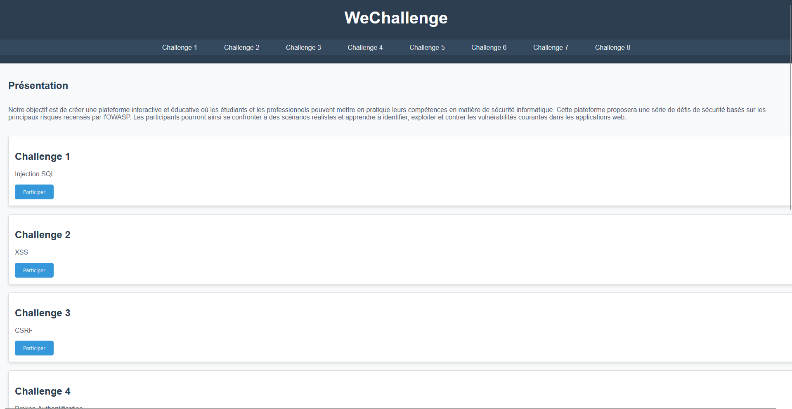

Résumé
Owasp-Challenge est une plateforme web développée dans un cadre académique pour permettre à des étudiants de s’entraîner sur des vulnérabilités web fréquentes. Le site est volontairement “basique” côté interface (HTML/CSS/JS), tandis que les failles sont principalement mises en place en PHP afin de reproduire des erreurs de développement réalistes.
Le projet se présente comme un parcours de 8 challenges, chacun centré sur une thématique de sécurité (OWASP). L’idée n’était pas de “casser pour casser”, mais de créer un support concret pour comprendre, exploiter, puis corriger/mitiger les failles.
Objectifs
- Pédagogie : apprendre par la pratique sur un environnement contrôlé.
- Réalisme : simuler des vulnérabilités vues en cours / en audit (mauvaises pratiques, erreurs courantes).
- Progressivité : proposer des challenges accessibles mais suffisamment variés.
- Reproductibilité : permettre aux camarades de rejouer les scénarios facilement.
- Culture sécurité : relier chaque exploit à une cause (root cause) et aux bonnes mitigations.
Architecture
Structure de la plateforme
Un site web simple, organisé autour d’un menu de challenges. Chaque challenge correspond à une page / fonctionnalité dédiée avec un comportement volontairement vulnérable.
- Parcours clair (8 modules)
- Objectifs et consignes par challenge
- Navigation simple et rapide
Back-end vulnérable (PHP)
Les vulnérabilités sont implémentées dans le code serveur pour reproduire des erreurs fréquentes : validation insuffisante, contrôles d’accès manquants, logique d’authentification fragile, etc.
- Endpoints/traitements dédiés
- Manipulation de sessions et paramètres
- Comportements volontairement “fail”
Front-end minimal (HTML/CSS/JS)
L’interface reste volontairement sobre : l’objectif est de se concentrer sur la compréhension des failles, pas sur un design complexe. Le JavaScript est utilisé uniquement lorsque nécessaire au scénario.
- Pages statiques simples
- Interactions légères
- Lisibilité des parcours
Challenges
Les 8 challenges
- Injection SQL : exploitation d’entrées non filtrées côté base de données.
- XSS : injection de scripts via rendu non échappé.
- CSRF : actions déclenchables sans protection anti-CSRF.
- Broken Authentication : faiblesses d’authentification / gestion de session.
- XXE : external entity sur parsing XML mal configuré.
- IDOR : accès direct à des ressources sans contrôle d’autorisation.
- Insecure Deserialization : désérialisation non sûre menant à des impacts critiques.
- SSRF : serveur utilisé comme proxy interne vers des ressources non exposées.
Format & consignes
- Objectif clair : créer un environnement vulnérable mais contrôlé pour l’entraînement.
- Indices : suffisamment de contexte pour guider sans “donner la réponse”.
- Compréhension : relier l’exploit à la cause dans le code.
Sécurité
Le projet est conçu pour être vulnérable, mais dans un cadre maîtrisé : l’objectif est l’entraînement, pas la mise en danger. Le déploiement doit donc rester isolé et réservé à un usage pédagogique, avec une séparation nette entre l’environnement de test et toute ressource sensible.
- Cadre : plateforme dédiée à l’apprentissage, environnement contrôlé.
- Isolation : exécution sur une machine/lab séparé, sans accès à des données réelles.
- Accès : périmètre restreint (réseau local / groupe de travail), pas d’exposition inutile.
- Traçabilité : logs de base pour comprendre les actions et déboguer les scénarios.
- Hygiène : documentation claire sur “où” et “comment” déployer sans risque.
Résultats
Challenges
8 scénarios
Thématiques
OWASP (web)
Usage
Entraînement
Aperçu

Notes & détails
Stack & organisation du code
- Back-end : PHP (routes/pages de challenge)
- Front-end : HTML / CSS / JavaScript
- Stockage : fichiers / base de données (selon challenge)
- Structure : 8 modules, navigation par menu
- Environnement : local/lab, déploiement isolé
Détail des challenges
- SQLi : page concernée, entrée vulnérable, impact attendu
- XSS : contexte (reflected/stored), payload, sortie non échappée
- CSRF : action ciblée, absence de token, démonstration
- Broken Auth : faiblesse choisie (sessions, brute force, logique, etc.)
- XXE : parsing XML, configuration, lecture de ressources
- IDOR : ressource exposée, ID manipulable, absence d’ACL
- Deserialization : format, objet, conséquence
- SSRF : endpoint, cibles internes, restrictions contournées